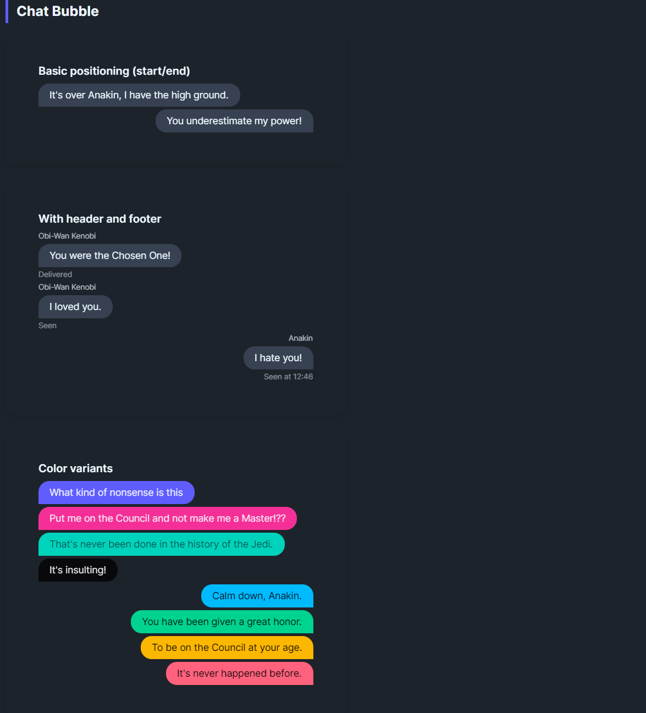
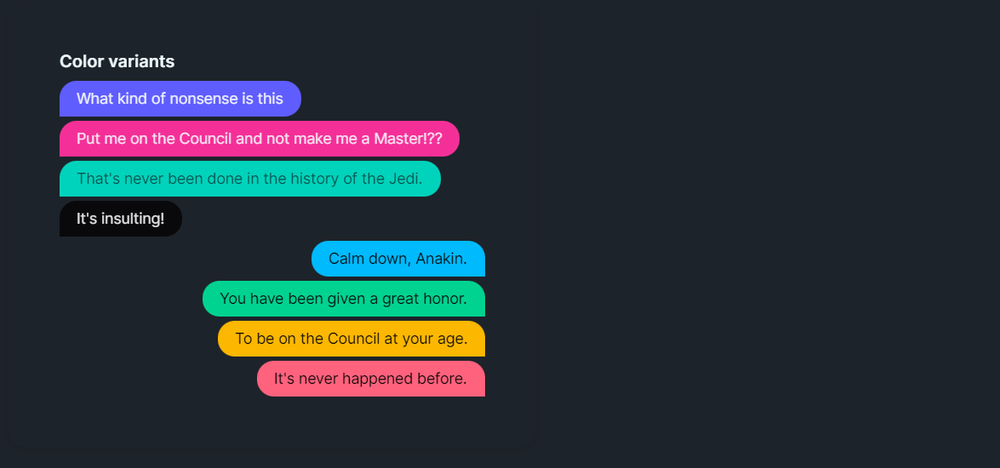

DaisyChatBubble renders chat-style message bubbles with alignment control, optional avatar image, header/footer text, and 9 color variants. IsEnd flips the bubble to the right side and mirrors the tail rounding for responder messages. Use it for conversation threads, comments, or inline messaging UIs.
| Variant | Description |
|---|---|
| Default | Neutral base bubble. |
| Neutral | Muted gray fill with matching content color. |
| Primary / Secondary / Accent | Brand-aligned fills for emphasis. |
| Info / Success / Warning / Error | Semantic colors for status or tone. |
| Property | Description |
|---|---|
IsEnd |
Aligns the bubble to the right, swaps corner rounding (tail on the left), and mirrors avatar/header/footer placement. |
Header |
Small text above the bubble (e.g., sender name); auto-hides when empty. |
Footer |
Small text below (e.g., timestamps/read receipts); auto-hides when empty. |
Image |
Optional avatar shown beside the bubble; hides when not set. |
Padding / CornerRadius |
Control bubble padding and rounding (default 16,8 padding with 16px rounded tail). |
<!-- Simple exchange -->
<StackPanel Spacing="6">
<controls:DaisyChatBubble Content="It's over Anakin, I have the high ground." />
<controls:DaisyChatBubble IsEnd="True" Content="You underestimate my power!" />
</StackPanel>
<!-- With header/footer and avatar -->
<controls:DaisyChatBubble Header="Obi-Wan Kenobi"
Footer="Delivered"
Image="{StaticResource ObiWanAvatar}">
<TextBlock Text="You were the Chosen One!" TextWrapping="Wrap" />
</controls:DaisyChatBubble>
<!-- Semantic variants -->
<controls:DaisyChatBubble Content="Info message" Variant="Info" />
<controls:DaisyChatBubble IsEnd="True" Content="Success!" Variant="Success" />
<controls:DaisyChatBubble Content="Warning: Check your connection." Variant="Warning" />
<controls:DaisyChatBubble IsEnd="True" Content="Error: Unable to send." Variant="Error" />
<!-- Thread with mixed alignment and headers -->
<StackPanel Spacing="8">
<controls:DaisyChatBubble Header="Support" Content="Can you describe the issue?" Footer="Seen 10:24" />
<controls:DaisyChatBubble IsEnd="True" Header="You" Content="App freezes on login." Footer="Sent 10:25" Variant="Primary" />
<controls:DaisyChatBubble Header="Support" Content="Trying a fix now." Variant="Info" />
</StackPanel>IsEnd=True for the local user and default alignment for remote speakers to maintain visual clarity.Footer for timestamps or delivery/read states.MaxWidth to prevent overly wide messages (defaults to 400).